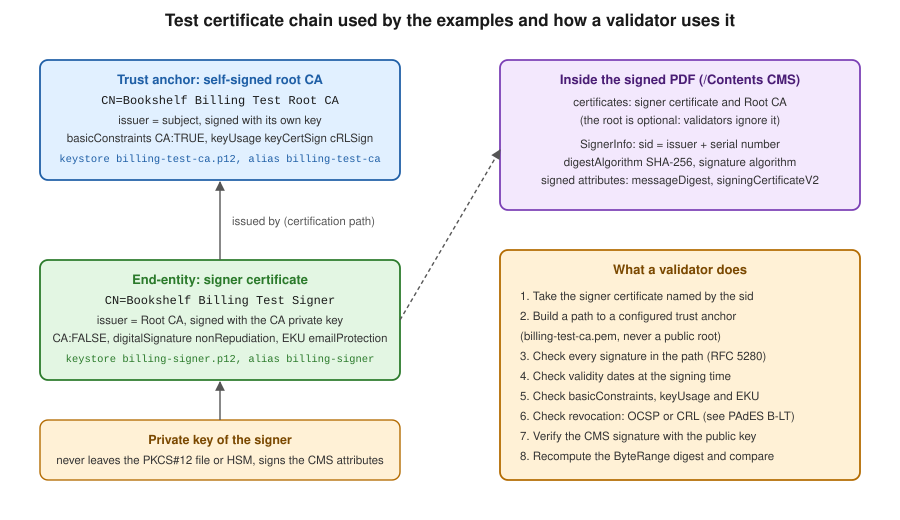
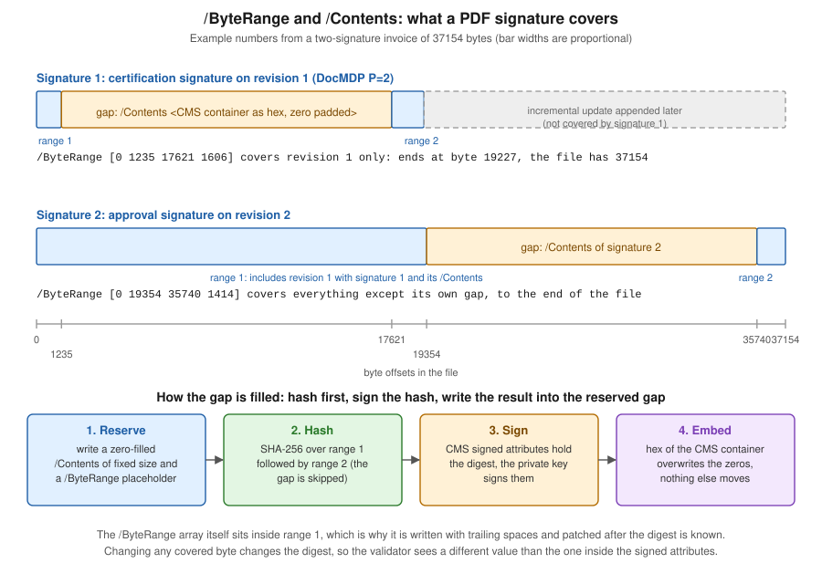

Digital Signature Fundamentals
|
This content was generated with the assistance of AI and should be verified against the official documentation before being relied on in production. |
A digital signature on a PDF answers two questions for the person who opens the file: who signed it, and has anything
changed since they did. Both answers come from public-key cryptography, and both are stored inside the PDF itself, in
a signature dictionary whose bytes are part of the file they protect. Before any library is involved, a developer who
signs invoices for the Bookshelf Billing service needs a clear mental model of that structure, because every error
message, every validator warning and every compliance question about signatures is a question about one of its parts:
the digest, the certificate chain, the CMS container, the /ByteRange that says which bytes were signed, and the
incremental updates that may follow.
This page is the conceptual foundation of the signature part of this section. It explains the building blocks, shows how
to read them out of a signed file with a short Java program (BouncyCastle and the JDK, no PDF library involved), and
owns the test PKI that every other signature page uses: a self-signed test root CA and a signer certificate issued
by it, created with keytool or OpenSSL, so that no example ever needs a real certificate. Versions are stated as of
2026-10-09: Java 21, Bouncy Castle 1.86 and iText 9.8.0, used here only to produce a test file. Both Java examples and
the keytool and OpenSSL scripts on this page were run against exactly those versions.
The next pages build on this one: PAdES Baseline Levels explains what the European profile adds (timestamps, validation data, archival timestamps), Signing PDFs with iText signs with iText 9.8, Signing with PDFBox and EU DSS does it with Apache PDFBox and the European Commission’s DSS library, Remote, HSM and Deferred Signing covers keys that cannot leave a device or service, and Signature Validation and Long-Term Validity covers verification. The file layout that all of them rely on is described in How a PDF File Works.
Hash and sign
Public-key signatures cannot be applied efficiently to megabytes of data, and they should not be: the private-key operation is slow, and its input is limited in size. Every practical scheme therefore works in two steps, usually called hash and sign.
-
A cryptographic hash function, such as SHA-256, turns the data (here, almost the whole PDF file) into a short digest of fixed length. Changing a single bit of the data changes the digest completely, and finding a different input with the same digest is computationally infeasible for a sound hash function.
-
The signer applies the private key to the digest (or, more precisely, to a structure that contains the digest), and produces the signature value. Anyone who has the matching public key can check that the value was produced by the holder of the private key for exactly this digest.
Verification repeats the first step on the data that is presented, compares the new digest with the one that the signature vouches for, and runs the public-key check. If the data changed, the digests differ. If the signature value was forged, the public-key check fails. The signature does not hide anything: a signed PDF is perfectly readable, and signing is independent of encryption (see Encryption & Permissions).
The first Java example uses only the JDK to make the two steps visible, with the key of the test signer created later on
this page. It needs no Maven dependency beyond Java 21; the PKCS#12 file billing-signer.p12 is created by the script
in the section on the test PKI, and its store password comes from the environment, never from the source.
package com.example.billing;
import java.io.InputStream;
import java.nio.charset.StandardCharsets;
import java.nio.file.Files;
import java.nio.file.Path;
import java.security.KeyStore;
import java.security.MessageDigest;
import java.security.PrivateKey;
import java.security.Signature;
import java.security.cert.X509Certificate;
import java.util.HexFormat;
/** Hash-and-sign with the JDK only: digest the data, then sign with the private key of billing-signer.p12. */
public final class HashAndSign {
public static void main(String[] args) throws Exception {
char[] storePassword = System.getenv("BILLING_KEYSTORE_PASSWORD").toCharArray();
KeyStore keyStore = KeyStore.getInstance("PKCS12");
try (InputStream in = Files.newInputStream(Path.of(args[0]))) {
keyStore.load(in, storePassword);
}
PrivateKey privateKey = (PrivateKey) keyStore.getKey("billing-signer", storePassword);
X509Certificate certificate = (X509Certificate) keyStore.getCertificate("billing-signer");
byte[] data = "Invoice 2026-0001".getBytes(StandardCharsets.UTF_8);
// Step 1: the digest. Any change to the data changes it completely.
byte[] digest = MessageDigest.getInstance("SHA-256").digest(data);
System.out.println("SHA-256 of the data: " + HexFormat.of().formatHex(digest));
// Step 2: the private-key operation. Signature hashes internally: SHA256withRSA = SHA-256 + RSA PKCS#1 v1.5.
Signature signer = Signature.getInstance("SHA256withRSA");
signer.initSign(privateKey);
signer.update(data);
byte[] signatureValue = signer.sign();
System.out.println("signature length: " + signatureValue.length + " bytes");
// Verification needs only the data, the signature value and the public key in the certificate.
Signature verifier = Signature.getInstance("SHA256withRSA");
verifier.initVerify(certificate.getPublicKey());
verifier.update(data);
System.out.println("valid for the original data: " + verifier.verify(signatureValue));
byte[] changed = "Invoice 2026-0002".getBytes(StandardCharsets.UTF_8);
verifier.initVerify(certificate.getPublicKey());
verifier.update(changed);
System.out.println("valid for changed data: " + verifier.verify(signatureValue));
}
private HashAndSign() {
}
}Run with java HashAndSign.java billing-signer.p12 after exporting the environment variable, it prints a 64 hex digit
digest (the SHA-256 of the data), a signature length of 384 bytes for an RSA 3072 key, true for the original data and
false for the changed data. The digest value is not reproduced here because it depends only on the data and is
irrelevant to the argument. Note that Signature.getInstance("SHA256withRSA") hashes internally: it is the combination
of SHA-256 and the RSA PKCS#1 v1.5 signature scheme. PDF signing does the same two steps, but the thing that is
digested is a pair of byte ranges of the file, and the thing that is signed is a CMS structure that contains the digest.
Both are described below. The class and its methods derive from the Java documentation of
java.security.Signature and
java.security.MessageDigest.
The choice of algorithms matters for the lifetime of the document. For new signatures use SHA-256 or stronger. SHA-1 is
forbidden for new signatures by ETSI TS 119 312, the European catalogue of cryptographic suites, and appears only in
legacy files; the SubFilter adbe.pkcs7.sha1 of old tutorials is one of them (see below). RSA keys should be at least
3072 bits for signatures that must stay valid for years, or an elliptic curve such as P-256, which gives smaller
signatures and faster operations. The algorithm and key-length recommendations, including RSA-PSS, ECDSA and the
post-quantum schemes added in the current edition of the ETSI document, are discussed in
PAdES Baseline Levels.
X.509 certificates and chains
A bare public key says nothing about who owns it. An X.509 certificate (RFC 5280) binds a public key to an identity (the subject) by having another party, the issuer, sign the pair. A certificate carries these fields that matter for signing PDFs:
-
The subject and the issuer, as distinguished names such as
CN=Bookshelf Billing Test Signer, O=Bookshelf Test, C=ES. -
The serial number, unique per issuer. The pair issuer plus serial number identifies a certificate and is what a CMS signature uses to say which certificate holds the key to verify it.
-
The validity period,
notBeforeandnotAfter. A signature is judged against the time at which it was made, not against the time at which it is checked, which is why timestamps matter (see PAdES Baseline Levels). -
The public key and the signature algorithm used by the issuer.
-
Extensions: basicConstraints (is this certificate a certification authority, and how long may a chain below it be), keyUsage (digitalSignature and nonRepudiation for document signing, keyCertSign and cRLSign for a CA), extendedKeyUsage (for example emailProtection or document signing), the subject and authority key identifiers, and the locations of revocation information: the CRL distribution points and the OCSP responder in the authority information access extension.
A single certificate is rarely enough to trust. Instead, validators build a chain (a certification path): the signer’s end-entity certificate was issued by an intermediate CA, which was issued by a root CA, which is self-signed and which the validator was configured to trust. The root is the trust anchor. Trust comes from the anchor, never from the PDF: a validator accepts a chain only if it ends at an anchor from its own trust store, which is the Adobe Approved Trust List for Acrobat, the EU Trusted Lists for European qualified signatures, or the certificate you configure in your own verification code.

The figure shows the test chain created below and the steps a validator takes. A production chain has the same shape, usually with one or two intermediate CAs between root and signer, and the signer’s private key usually inside a smart card, an HSM or a remote signing service rather than a file (see Remote, HSM and Deferred Signing). Which certificates are acceptable depends on the signature level you promise: any certificate works for a self-checked internal workflow, a certificate from a trusted-list CA is needed for Acrobat to show a green check without manual trust configuration, and a qualified certificate on a qualified device is required for a qualified electronic signature under eIDAS. These distinctions are explained in PAdES Baseline Levels. The format of the certificate and the path validation algorithm are specified in RFC 5280.
PKCS#12 keystores
A private key and its certificate chain are stored together in a keystore. The format that works everywhere is
PKCS#12 (RFC 7292), a file with the extension .p12 or .pfx that is encrypted with a store password. Java 9 made
it the default keytool type, replacing the proprietary JKS, and Java 21 reads and writes it natively with
KeyStore.getInstance("PKCS12"), which is what both examples on this page and the other signature pages use. OpenSSL
creates and reads the same files. A keystore holds entries, identified by an alias: a private key entry carries the
key and the certificate chain (signer first, then the issuing CAs), and a trusted certificate entry carries a single
public certificate.
Never commit a keystore, never paste a key into a page or a ticket, and never log a password. In a service the store
password comes from the secret store of the platform (see
Secrets Manager and KMS,
Key Vault and Secrets and
Secret Manager and KMS), and the keystore bytes themselves come from
the same place or from a mounted volume; better still, the private key stays in an HSM or a managed key service and the
service only sends it digests to sign. The examples read the password from the environment variable
BILLING_KEYSTORE_PASSWORD.
A test PKI with keytool
All the signature examples of this section use the same two keystores, created once with the JDK’s keytool. This page
owns the script, and the other pages show a short reminder and link back here. The naming convention is fixed:
| File | Alias | Content |
|---|---|---|
|
|
The self-signed test root CA: private key and certificate. Used only to issue the signer certificate. Not needed at signing time. |
|
|
The signer: private key plus the chain [signer certificate, root CA certificate]. This is the keystore the signing code opens. |
|
(a file, not a keystore) |
The CA certificate in PEM text, exported at run time. This is the trust anchor that validation examples are configured with. |
The script below creates a 3072-bit RSA root CA valid for ten years, a 3072-bit RSA signer valid for 825 days, and has
the CA issue the signer certificate from a certificate signing request. It reads the store password interactively, so
that no password literal exists in the page or in the shell history; for a throw-away test run you may instead export
an obvious placeholder value, such as changeit-placeholder, and delete the files afterwards.
# 0. Store password for both keystores, taken from the terminal and exported for keytool.
read -rs BILLING_KEYSTORE_PASSWORD && export BILLING_KEYSTORE_PASSWORD
# 1. Self-signed root CA (basicConstraints CA:true, may sign certificates and CRLs).
keytool -genkeypair -alias billing-test-ca -keyalg RSA -keysize 3072 -sigalg SHA256withRSA \
-validity 3650 -dname "CN=Bookshelf Billing Test Root CA, O=Bookshelf Test, C=ES" \
-ext bc:c=ca:true -ext ku:c=keyCertSign,cRLSign \
-keystore billing-test-ca.p12 -storetype PKCS12 \
-storepass:env BILLING_KEYSTORE_PASSWORD -keypass:env BILLING_KEYSTORE_PASSWORD
# 2. The signer's own key pair (with a temporary self-signed certificate that step 5 replaces).
keytool -genkeypair -alias billing-signer -keyalg RSA -keysize 3072 -sigalg SHA256withRSA \
-validity 825 -dname "CN=Bookshelf Billing Test Signer, O=Bookshelf Test, C=ES" \
-keystore billing-signer.p12 -storetype PKCS12 \
-storepass:env BILLING_KEYSTORE_PASSWORD -keypass:env BILLING_KEYSTORE_PASSWORD
# 3. A certificate signing request for the signer.
keytool -certreq -alias billing-signer -sigalg SHA256withRSA \
-keystore billing-signer.p12 -storepass:env BILLING_KEYSTORE_PASSWORD \
-file billing-signer.csr
# 4. The CA issues the signer certificate: an end-entity certificate for document signing.
keytool -gencert -alias billing-test-ca -sigalg SHA256withRSA -validity 825 -rfc \
-ext bc:c=ca:false -ext ku:c=digitalSignature,nonRepudiation -ext eku=emailProtection \
-keystore billing-test-ca.p12 -storepass:env BILLING_KEYSTORE_PASSWORD \
-infile billing-signer.csr -outfile billing-signer.pem
# 5. Export the CA certificate (the trust anchor), then import it and the issued certificate
# into the signer keystore; the second import replaces the temporary certificate and stores
# the full chain [signer, CA] under the alias billing-signer.
keytool -exportcert -rfc -alias billing-test-ca \
-keystore billing-test-ca.p12 -storepass:env BILLING_KEYSTORE_PASSWORD \
-file billing-test-ca.pem
keytool -importcert -noprompt -alias billing-test-ca -file billing-test-ca.pem \
-keystore billing-signer.p12 -storepass:env BILLING_KEYSTORE_PASSWORD
keytool -importcert -noprompt -alias billing-signer -file billing-signer.pem \
-keystore billing-signer.p12 -storepass:env BILLING_KEYSTORE_PASSWORD
# 6. Check: the signer entry must report a chain of length 2, issued by the test CA.
keytool -J-Duser.language=en -list -v -alias billing-signer -keystore billing-signer.p12 \
-storepass:env BILLING_KEYSTORE_PASSWORD | grep -E "Certificate chain length|Owner|Issuer"Three details of the script are easy to miss. First, -storepass:env and -keypass:env make keytool read the
password from the named environment variable; they avoid putting the password on a command
line where other users of the machine could see it. Second, in a PKCS#12 keystore the key password is the store password,
which is why both options name the same variable. Third, keytool -importcert of the issued certificate works because the
CA certificate was imported first as a trusted entry with its own alias: keytool rebuilds the chain
from the certificates it finds in the keystore, and the result is a private key entry whose chain has length two. The check
in step 6 prints Certificate chain length: 2, with the signer’s owner and the CA as its issuer. The commands are
documented in the keytool reference for JDK 21.
The extensions on the signer certificate say that it is not a CA (ca:false), may be used to sign data
(digitalSignature, nonRepudiation) and is intended for e-mail and document protection (emailProtection); a
validator that checks key usage accepts it for signing documents.
The CA keystore billing-test-ca.p12 is needed only for issuing; the signing examples read billing-signer.p12, and
validation examples read billing-test-ca.pem. Because the CA is created by you, it is trusted by nobody else: Acrobat
typically reports the signature as intact but with an unknown signer until you add billing-test-ca.pem to its trusted
certificates, which is exactly the situation of a signature made with any certificate outside a trust list.
A test PKI with OpenSSL
OpenSSL creates the same structure, which is useful on machines without a JDK, or when you want an elliptic curve
key. The following variant uses ECDSA with P-256 for both certificates and produces files of the same names, so the
other pages work with either variant (their signing examples use the algorithm of the key; an EC key signs with
SHA256withECDSA). It was run with the LibreSSL 3.3.6 that ships with macOS; the options used are standard OpenSSL options.
read -rs BILLING_KEYSTORE_PASSWORD && export BILLING_KEYSTORE_PASSWORD
# Minimal configuration: the two extension profiles for the CA and for the signer.
cat > billing-pki.cnf <<'CONF'
[ req ]
distinguished_name = dn
[ dn ]
[ v3_ca ]
basicConstraints = critical, CA:TRUE
keyUsage = critical, keyCertSign, cRLSign
subjectKeyIdentifier = hash
[ v3_signer ]
basicConstraints = CA:FALSE
keyUsage = critical, digitalSignature, nonRepudiation
extendedKeyUsage = emailProtection
subjectKeyIdentifier = hash
authorityKeyIdentifier = keyid
CONF
# Root CA: key and self-signed certificate (the PEM is the trust anchor).
openssl ecparam -name prime256v1 -genkey -noout -out billing-test-ca.key
openssl req -x509 -new -key billing-test-ca.key -sha256 -days 3650 \
-config billing-pki.cnf -extensions v3_ca \
-subj "/C=ES/O=Bookshelf Test/CN=Bookshelf Billing Test Root CA" -out billing-test-ca.pem
# Signer: key, request, certificate issued by the CA.
openssl ecparam -name prime256v1 -genkey -noout -out billing-signer.key
openssl req -new -key billing-signer.key -config billing-pki.cnf \
-subj "/C=ES/O=Bookshelf Test/CN=Bookshelf Billing Test Signer" -out billing-signer.csr
openssl x509 -req -in billing-signer.csr -CA billing-test-ca.pem -CAkey billing-test-ca.key \
-CAcreateserial -sha256 -days 825 -extfile billing-pki.cnf -extensions v3_signer \
-out billing-signer.pem
# PKCS#12 with the key, the certificate and the CA certificate as the chain.
openssl pkcs12 -export -inkey billing-signer.key -in billing-signer.pem \
-certfile billing-test-ca.pem -name billing-signer \
-passout env:BILLING_KEYSTORE_PASSWORD -out billing-signer.p12
# Check: the signer certificate must verify against the CA certificate.
openssl verify -CAfile billing-test-ca.pem billing-signer.pemThe -subj option sets the distinguished name; leaving the [ dn ] section of the configuration empty is the form
that keeps the option effective with both OpenSSL and LibreSSL. After this script the unencrypted .key files must be
deleted, because only the PKCS#12 file is protected by the store password. Finally,
openssl verify printing OK proves that the signer certificate chains to the CA certificate, the same fact that a PDF
validator re-checks when it opens a signed file. The options are documented in the
openssl-pkcs12 manual. In both variants the files are
generated when you run the script; none of their content appears in this documentation, and a real service never
reuses a test CA.
CMS: the container of a PDF signature
The signature value itself is not stored as a bare number. PDF stores a Cryptographic Message Syntax (CMS) object,
specified in RFC 5652, the standard successor of PKCS#7. The two names are
used interchangeably in PDF, as in the SubFilter adbe.pkcs7.detached. A signature uses the CMS type SignedData, which
contains:
-
the digest algorithms used;
-
the encapsulated content, which for PDF signatures is absent (a detached signature): the signed content is the file, outside the container, and the container stores only its digest;
-
optionally the certificates needed to verify, in practice the signer certificate and the intermediate CAs;
-
optionally CRLs, and one or more SignerInfo structures.
A SignerInfo identifies the signer’s certificate (issuer plus serial number, or a subject key identifier), names the
digest algorithm and the signature algorithm, and carries two sets of attributes. The signed attributes are covered by
the signature: the content type, the messageDigest attribute (the SHA-256 of the signed bytes of the file), in plain
CMS and CAdES signatures the signing time, and for CAdES signatures the signing-certificate attribute that pins the
exact certificate. The PAdES baseline profile (ETSI EN 319 142-1) forbids the CMS signing-time attribute: in a PDF the
claimed signing time is the /M entry of the signature dictionary. It is these
signed attributes, and not the file, that the private key signs: that is hash and sign applied twice, once to the file
and once to the attribute set. The unsigned attributes can be added later without breaking the signature, and the most
important one is the signature timestamp of RFC 3161, which proves that the signature existed at a given time (the
basis of PAdES B-T).
The consequence for a validator is a fixed sequence: recompute the file digest and compare it with messageDigest, then
verify the signature value over the signed attributes with the public key of the signer certificate, then validate the
certificate chain. The Java example later on this page performs the first two steps. The European profile of CMS used in
PAdES is CAdES (ETSI EN 319 122), and the signature timestamp format is RFC 3161, both covered in
PAdES Baseline Levels.
The PDF signature dictionary
In a PDF a signature lives in two linked places. A signature field is a form field of type /Sig (see
How a PDF File Works for objects and the catalog): it is part of the
/AcroForm field tree, it may be visible through a widget annotation with an appearance, or invisible, and its value
/V points to a signature dictionary. The /AcroForm dictionary carries /SigFlags, whose bits tell a viewer that
the document contains signatures and must be saved in append mode. The signature dictionary holds the signature
itself:
| Entry | Meaning |
|---|---|
|
Marks the dictionary as a signature ( |
|
The signature handler, nearly always |
|
The encoding of the value: |
|
Array of four integers, |
|
The signature value: the hex string of the DER-encoded CMS container, zero padded to a fixed size. |
|
Used by |
|
The signing time as a PDF date. It is claimed by the signer and has no evidential value on its own: only a trusted timestamp proves a time. |
|
Optional text entries shown by viewers: signer name, reason, place and contact. |
|
Array of signature reference dictionaries. Certification signatures put a |
|
Optional, written by the signing software: name and version of the application that produced the signature. |
The /Contents hex string and the signature-bearing dictionary have a property that no other object in a PDF has:
their bytes are rewritten after the rest of the file is complete. This is the subject of the next section. The
dictionary entries are defined in ISO 32000-2, clause 12.8, which can be downloaded free of charge from the PDF
Association’s sponsored standards page (the page returns an error to command
line tools, open it in a browser).
/ByteRange and /Contents: what exactly is signed
A signature cannot cover its own bytes, because the signature value depends on the digest and the digest would depend on the signature value. PDF solves it with a deliberate hole. When the signer writes the file, it:
-
writes the whole signature dictionary, with a
/Contentshex string of a fixed length, filled with zeros, large enough for the CMS container that will come (a few kilobytes for a signature with a chain; much more if timestamps and validation data are embedded); -
writes a
/ByteRangeplaceholder, padded with spaces; -
computes the offsets: the first range runs from byte 0 to the opening
<of the hex string, and the second range from the closing>to the end of the file, so the hex string with its angle brackets is the hole; -
patches
/ByteRangewith the real four numbers, which the padding made possible without moving any other byte; -
digests the two ranges, builds and signs the CMS container, and overwrites the zeros of the hole with its hex.

The figure uses the numbers of a real file with two signatures made by the test signer of this page. The first signature
covers [0 1235 17621 1606]: 1235 bytes before the hole, a hole of 16386 bytes, and 1606 bytes after it, ending at
byte 19227, which is where the file ended when the first signature was made. A second revision was appended by an
incremental update, and its signature covers [0 19354 35740 1414]: everything before its own hole, including the whole
first signature, and the 1414 bytes after it, up to the end of the 37154 byte file. A signature that covers the file
from the first to the last byte except its own hole is the strongest case; one whose second range ends before the end of
the file protects only an earlier revision, and the bytes after it are changes that a validator has to examine
separately (see the section on incremental updates).
A validator therefore does not trust the contents of the PDF it reads in the signed bytes: it checks that the
/ByteRange has the shape of two ranges with a single gap, that the gap is exactly the /Contents of the signature
dictionary it started from, and whether the second range reaches the end of the file. Several published attacks against
PDF validators played with these checks, which is why a validator must be strict and why you should validate the
files you produce with a different implementation than the one that signed them (see
Signature Validation and Long-Term Validity).
Reading a signature with Java
The following program makes the figure concrete. It takes any signed PDF, finds every /ByteRange, computes the digest
of the covered bytes with the JDK, parses the CMS container from the hole with Bouncy Castle, compares the computed digest
with the messageDigest signed attribute, and verifies the signature value over the signed attributes with the
certificate embedded in the container. It never signs anything, uses no PDF library, and prints the digests instead of
storing them anywhere. The text scan is deliberately simple: it reads the file as ISO-8859-1 and uses a regular
expression, which is enough for the files produced by iText and PDFBox, whose signature dictionaries are written as
plain objects. A production validator must instead parse the object structure, because a signature dictionary can live in
an object stream of a file written by another tool.
Maven coordinates, for Java 21. bcpkix-jdk18on brings bcprov-jdk18on with it; iText and its Bouncy Castle adapter
are not needed by this example.
<dependency>
<groupId>org.bouncycastle</groupId>
<artifactId>bcpkix-jdk18on</artifactId>
<version>1.86</version>
</dependency>package com.example.billing;
import java.io.ByteArrayInputStream;
import java.nio.charset.StandardCharsets;
import java.nio.file.Files;
import java.nio.file.Path;
import java.security.MessageDigest;
import java.security.Security;
import java.security.cert.CertificateFactory;
import java.security.cert.X509Certificate;
import java.util.Collection;
import java.util.HexFormat;
import java.util.regex.Matcher;
import java.util.regex.Pattern;
import org.bouncycastle.asn1.ASN1InputStream;
import org.bouncycastle.asn1.ASN1ObjectIdentifier;
import org.bouncycastle.asn1.ASN1OctetString;
import org.bouncycastle.asn1.cms.Attribute;
import org.bouncycastle.asn1.cms.CMSAttributes;
import org.bouncycastle.asn1.cms.ContentInfo;
import org.bouncycastle.cert.X509CertificateHolder;
import org.bouncycastle.cms.CMSException;
import org.bouncycastle.cms.CMSProcessableByteArray;
import org.bouncycastle.cms.CMSSignedData;
import org.bouncycastle.cms.SignerInformation;
import org.bouncycastle.cms.jcajce.JcaSimpleSignerInfoVerifierBuilder;
import org.bouncycastle.jce.provider.BouncyCastleProvider;
import org.bouncycastle.operator.DefaultAlgorithmNameFinder;
/**
* Reads every /ByteRange of a signed PDF, recomputes the digest of the signed bytes and compares it
* with the messageDigest attribute inside the CMS container stored in /Contents.
*/
public final class ByteRangeInspector {
private static final Pattern BYTE_RANGE =
Pattern.compile("/ByteRange\\s*\\[\\s*(\\d+)\\s+(\\d+)\\s+(\\d+)\\s+(\\d+)\\s*\\]");
public static void main(String[] args) throws Exception {
Security.addProvider(new BouncyCastleProvider());
byte[] pdf = Files.readAllBytes(Path.of(args[0]));
String text = new String(pdf, StandardCharsets.ISO_8859_1);
Matcher matcher = BYTE_RANGE.matcher(text);
int number = 0;
while (matcher.find()) {
number++;
int[] range = new int[4];
for (int i = 0; i < 4; i++) {
range[i] = Integer.parseInt(matcher.group(i + 1));
}
inspect(number, pdf, range);
}
if (number == 0) {
System.out.println("No /ByteRange found: the file carries no signature.");
}
}
private static void inspect(int number, byte[] pdf, int[] r) throws Exception {
int gapStart = r[0] + r[1];
int gapEnd = r[2];
boolean coversFile = r[0] == 0 && r[2] + r[3] == pdf.length;
System.out.printf("Signature %d: /ByteRange [%d %d %d %d], gap of %d bytes holds /Contents%n",
number, r[0], r[1], r[2], r[3], gapEnd - gapStart);
System.out.printf(" covers the whole file: %s (file length %d)%n", coversFile, pdf.length);
// The gap is "<hex digits>" including the angle brackets, padded with zeros.
String hex = new String(pdf, gapStart + 1, gapEnd - gapStart - 2, StandardCharsets.ISO_8859_1);
byte[] cms = HexFormat.of().parseHex(hex);
ContentInfo contentInfo;
try (ASN1InputStream in = new ASN1InputStream(new ByteArrayInputStream(cms))) {
contentInfo = ContentInfo.getInstance(in.readObject()); // trailing padding is ignored
}
// The signed content is not inside the container (detached): it is the two ranges, joined.
byte[] signedBytes = new byte[r[1] + r[3]];
System.arraycopy(pdf, r[0], signedBytes, 0, r[1]);
System.arraycopy(pdf, r[2], signedBytes, r[1], r[3]);
CMSSignedData signedData = new CMSSignedData(new CMSProcessableByteArray(signedBytes), contentInfo);
SignerInformation signer = signedData.getSignerInfos().getSigners().iterator().next();
String algorithm = new DefaultAlgorithmNameFinder()
.getAlgorithmName(new ASN1ObjectIdentifier(signer.getDigestAlgOID()));
MessageDigest digest = MessageDigest.getInstance(algorithm);
byte[] computed = digest.digest(signedBytes);
Attribute attribute = signer.getSignedAttributes().get(CMSAttributes.messageDigest);
byte[] claimed = ASN1OctetString.getInstance(attribute.getAttrValues().getObjectAt(0)).getOctets();
System.out.printf(" digest algorithm: %s%n", algorithm);
System.out.printf(" computed over the two ranges: %s%n", HexFormat.of().formatHex(computed));
System.out.printf(" messageDigest in the CMS: %s%n", HexFormat.of().formatHex(claimed));
System.out.printf(" digests equal: %s%n", MessageDigest.isEqual(computed, claimed));
// Second half of hash-and-sign: the private-key signature covers the signed attributes.
Collection<X509CertificateHolder> certs =
signedData.getCertificates().getMatches(signer.getSID());
X509Certificate certificate = (X509Certificate) CertificateFactory.getInstance("X.509")
.generateCertificate(new ByteArrayInputStream(certs.iterator().next().getEncoded()));
boolean valid;
try {
valid = signer.verify(new JcaSimpleSignerInfoVerifierBuilder()
.setProvider("BC").build(certificate));
} catch (CMSException e) {
valid = false; // for example: the digest attribute does not match the bytes
}
System.out.printf(" signer: %s%n signature over the signed attributes verifies: %s%n",
certificate.getSubjectX500Principal().getName(), valid);
}
private ByteRangeInspector() {
}
}Run against a file signed twice, as in the figure (with the path of the signed PDF as the argument), the program prints
this, where <hex digest> stands for 64 hexadecimal digits that are different for every file:
Signature 1: /ByteRange [0 1235 17621 1606], gap of 16386 bytes holds /Contents
covers the whole file: false (file length 37154)
digest algorithm: SHA256
computed over the two ranges: <hex digest>
messageDigest in the CMS: <hex digest>
digests equal: true
signer: CN=Bookshelf Billing Test Signer,O=Bookshelf Test,C=ES
signature over the signed attributes verifies: true
Signature 2: /ByteRange [0 19354 35740 1414], gap of 16386 bytes holds /Contents
covers the whole file: true (file length 37154)
digest algorithm: SHA256
computed over the two ranges: <hex digest>
messageDigest in the CMS: <hex digest>
digests equal: true
signer: CN=Bookshelf Billing Test Signer,O=Bookshelf Test,C=ES
signature over the signed attributes verifies: trueFlipping one bit of the first revision turns every digests equal line into false and the signature check into false
as well, because the covered bytes no longer produce the digest that the signer signed; that is the whole point of the
mechanism. The test file for this run was produced with iText 9.8.0 (PdfSigner in append mode, signed twice with the
keystore created above, the first time as a certification signature); the signing code is the subject of
Signing PDFs with iText, and the reader above works equally for
files signed with PDFBox, EU DSS or Acrobat. The example derives from the Bouncy Castle
Java documentation of the CMS API and from the signature
dictionary description in the iText Knowledge Base
digital signatures hub. It checks the cryptography of the signature
and not the trust in the signer’s certificate: it does not build a chain to a trust anchor, check revocation, or
decide whether the changes after the signature were allowed. Those steps belong to a validator.
SubFilters: how the value is encoded
The /SubFilter entry tells a reader how to interpret /Contents. The ones that matter today are:
| SubFilter | What it is | Use |
|---|---|---|
|
A CMS (PKCS#7) detached signature: the digest of the byte ranges is a signed attribute, and the certificates are in the container. |
The Adobe-defined profile and the default of most libraries, including iText’s |
|
A CAdES detached signature, with the signing-certificate attribute and the other ETSI profile rules. |
The PAdES profile. Required for PAdES baseline signatures (B-B and above) and used by |
|
A document timestamp: the |
PAdES B-LTA archival timestamps and the document timestamp that protects validation data. |
|
A PKCS#7 signature whose encapsulated content is the SHA-1 digest of the byte ranges (the document bytes themselves are not embedded); the SignedData is then signed as usual. |
Deprecated, found in old files and in tutorials from the iText 5 era. Do not create it. |
|
A bare RSA signature with the certificate in |
Deprecated by ISO 32000-2. Do not create it. |
The CAdES SubFilter is not just a different name. CAdES requires the signing-certificate-v2 signed attribute that binds
the signature to the exact signer certificate, and is what a PAdES validator expects. For
invoices that have to be valid in a European regulatory context, choose ETSI.CAdES.detached from the start; for an
internal approval workflow, either works. How a validator treats each of them is discussed in the validation page.
Incremental updates and signatures
A PDF can be modified by appending a new section to the end of the file, with new and changed objects, a new
cross-reference section and a trailer whose /Prev points to the previous cross-reference section (see the incremental
update section of How a PDF File Works). The bytes before the
appended section are not touched. That property is what makes signatures possible on a format that is otherwise
rewritten whenever it is edited: the signature of revision 1 covers the bytes of revision 1, and appending revision 2
leaves those bytes, and therefore that digest, intact. A reader can recompute the digest of the first revision at any
time, as the program above does.
This produces the revision concept that every signature page uses:
-
Signing a signed file is an incremental update. The signer appends the signature field, the signature dictionary and a new cross-reference section to the document and signs the result. This is why iText’s
PdfSigneris opened withStampingProperties().useAppendMode()when the input already carries signatures, so that the earlier bytes survive. -
Saving a signed document must append. Rewriting the file with a non-incremental writer (iText stamping mode, PDFBox
saveinstead ofsaveIncremental, or any tool that rebuilds the file) discards the earlier bytes and invalidates the signature that covered them. Changing a document after it was signed is therefore a deliberate act: either the file is rebuilt and signed again, or the change is appended and the validator is asked to decide whether it is permitted. -
Some appended revisions are normal. Adding another signature, filling a form field that the author permitted, adding an annotation that the certification level allows, and adding validation data to the document security store (DSS) of a PAdES B-LT file are all incremental updates that legitimate software performs after the first signature.
-
Other appended revisions are attacks. A revision that replaces a page’s content, adds an overlay that hides text, or swaps a form field’s appearance can make the visible document differ from what the signer saw while leaving the signed bytes of the earlier revision byte-for-byte intact. This is the reason a complete validation reports not only whether the signature is cryptographically valid, but also whether changes follow it, and what kind. The permitted kinds are exactly what DocMDP and FieldMDP, below, declare.
The figure and numbers above show it: the first signature of the file still verifies although a second revision was
appended, because all it covers is its own revision. A validator that sees covers the whole file: false for a
signature knows that bytes were appended after it, and must then compare the appended objects with the allowed
modifications. The appended-bytes policy is therefore not a property of the crypto: it is a property of the document,
declared by the author’s certification signature.
Approval versus certification signatures
PDF defines two kinds of document signature, which differ in what they say about subsequent changes.
An approval signature (also called an ordinary or recipient signature) says "I, the signer, approve the content of the document as it was when I signed". It places no restriction on what happens afterwards: anybody can append revisions, add further approval signatures, and fill forms, and the signature simply stays valid for its own revision. A document can carry any number of approval signatures. Most signature fields of a contract workflow are approval signatures.
A certification signature (also called an author signature) is the first signature of a document and declares what
changes the author permits after it. It does this through a DocMDP (Document Modification Detection and Prevention)
transform in the signature’s /Reference array, whose parameter /P is the permission level, and a pointer from the
document catalog:
/Catalog << ... /Perms << /DocMDP 8 0 R >> >> (indirect reference to the signature dictionary)
/Sig << /Reference [ << /Type /SigRef /TransformMethod /DocMDP
/TransformParams << /Type /TransformParams /P 2 /V /1.2 >> >> ] ... >>
The catalog’s /Perms dictionary is how a viewer finds the certifying signature without scanning every field. At most one
certification signature may exist in a document, it must be the first signature, and any later /DocMDP entry is
ignored. The three levels are:
/P |
Meaning | Appended changes that keep the signature valid |
|---|---|---|
1 |
No changes permitted |
None. Any appended change invalidates the certification, which suits a document that must stay exactly as issued. |
2 |
Form filling and signing |
Filling in the existing form fields, instantiating page templates, and adding signature fields and signatures. |
3 |
Form filling, signing and annotations |
Everything of level 2, plus creating, deleting and modifying annotations (comments, highlights, stamps). |
The value of /P defaults to 2 when absent. Level 2 is the sensible default for forms workflows: the author certifies
the layout and text and allows the customer to fill the fields and sign. Level 1 suits a final document such as an issued
invoice that nobody should change after it left the issuer; because it permits nothing, test the downstream workflow,
including whatever validation data or timestamps you plan to append, before choosing it. In iText 9 the level is
AccessPermissions, an enum in com.itextpdf.signatures with the constants UNSPECIFIED (an approval signature),
NO_CHANGES_PERMITTED (P=1), FORM_FIELDS_MODIFICATION (P=2) and ANNOTATION_MODIFICATION (P=3), set with
SignerProperties.setCertificationLevel(...), as the test file of this page did for its first signature (level 2). The
iText signing page shows the code, and the
AccessPermissions API page
lists the constants. Acrobat shows a certified document with a blue ribbon and tells the user what changes are allowed;
a violated certification is shown as an invalid signature.
A third kind of signature exists in the specification and is worth recognising so as not to confuse it: usage rights
(/UR3 in /Perms) were used by Adobe to unlock extra features of its reader for a document. They are not a document
signature in the sense of this page, they are proprietary, and iText and PDFBox do not create them.
FieldMDP: locking fields
DocMDP is a document-wide policy that only the author’s first signature can set. FieldMDP is its field-level counterpart: a signature can declare that the values of certain form fields must not change after it was applied, without freezing the whole document. It exists in two forms:
-
On a signature field, a
/Lockdictionary of type/SigFieldLockstates which fields are locked once this field is signed:/Action /Alllocks every field of the form,/Action /Includelocks the fields listed in/Fields, and/Action /Excludelocks every field except the listed ones. A/Pentry in the same dictionary can also declare the DocMDP level that becomes effective with this signature. Because the lock lives in the field, the author creates it before the document reaches the signer. -
In the signature dictionary itself, a
/Referenceentry with/TransformMethod /FieldMDPand/TransformParamswith the same/Actionand/Fieldsentries. This is the encoding a validator reads when it evaluates the signature.
In iText 9 the lock dictionary is built with PdfSigFieldLock: setFieldLock(LockAction, String...) takes
PdfSigFieldLock.LockAction.ALL, INCLUDE or EXCLUDE and the field names, and setDocumentPermissions(...) sets the
level that applies with this signature. A typical use in the Bookshelf Billing onboarding form is a
signature that locks the fields the customer already filled, so that nothing they entered can change after the
back-office employee signs; the form fields themselves (types, flags, appearances) are described in the editable
forms pages of this section. The
API is documented in the
PdfSigFieldLock reference.
FieldMDP and DocMDP combine, and the strictest one wins: if the certification signature allows form filling (P=2) but a later signature locks fields X and Y, then changing field X after that signature invalidates the later signature while leaving the certification intact.
Multiple signatures
A PDF file may contain any number of signatures, and they are sequential, not parallel: each new signature is an
incremental update that covers the whole file as it stood, including the earlier signatures and their /Contents. The
figure above shows it: the byte range of the second signature contains the first signature entirely. Consequences:
-
Order matters. A signature made later attests to a document that already contained the earlier ones; an earlier signature does not attest to anything after its revision, and Acrobat’s signature panel shows the revision that each signature covers.
-
A certification signature, if there is one, comes first. A document that has an approval signature cannot receive a certification signature afterwards.
-
A countersignature in the CMS sense (a signature over another signature value, defined in RFC 5652) is a different mechanism from a second PDF signature. PDF workflows use second signatures; when you need a witness or a later party to sign "on top" of the first one, simply add another signature field.
-
Every signature needs its own signature field name (
/T), unique in the document. A service that signs a template over and over must name the field on every call, or generate unique names. -
Each signature adds bytes, for the CMS container (with or without a chain and with or without validation data), so a file with several long-term-validation signatures grows noticeably.
-
Appearance (a visible box with name, date and logo) is independent from the cryptography: an invisible signature is a valid signature, a visible one is a widget that the signer or a user chose to display, and neither says anything about the other, so a screenshot of a signature box is not evidence of anything.
For the Bookshelf Billing scenario, the ordinary sequence is: the service issues an invoice and signs it once with the company’s certificate (a certification signature at P=1 or an approval signature, depending on whether later changes are allowed) and, for the onboarding form, certifies a template at P=2, lets the customer fill it, and adds a customer signature and a back-office signature in turn. Each of these uses the same file layout described here.
Choosing between libraries
The foundation is the same whichever library signs: a CMS container, a byte range with a hole, a certificate chain and an optional timestamp. The libraries differ in how much of this they hide.
-
iText 9.8 provides a high-level class,
PdfPadesSigner, which produces PAdES baseline levels B-B, B-T, B-LT and B-LTA in one call, and the lower-levelPdfSignerwithSignerProperties, which gives full control over field name, appearance, certification level and the external-signature interface. iText is licensed under the AGPLv3 or a commercial licence, and the signing module needs the Bouncy Castle adapter. See Signing PDFs with iText. -
Apache PDFBox 3.0.8 (Apache-2.0) offers
PDDocument.addSignaturewith aSignatureInterfacethat you implement, and leaves the CMS construction, timestamps and validation data to you or to a library. The EU DSS 6.5 library (LGPL-2.1), the European Commission’s reference implementation, builds on PDFBox, creates PAdES B-B to B-LTA with a consistent API and validates signatures against the EU trusted lists. See Signing with PDFBox and EU DSS. -
Deferred and remote signing separates the two halves of the flow described above: the service prepares the PDF and the digest of the byte ranges, an external device or service signs the digest, and the service embeds the CMS container into the hole. It is the standard solution when the private key cannot be exported, and the reason that the digest is sent rather than the file. See Remote, HSM and Deferred Signing.
Operational advice
-
Keep the signer’s private key out of the application image. Use an HSM, a managed key service or at least a keystore injected at run time from a secret store, and never bake
billing-signer.p12into a container image or a repository. -
Decide the SubFilter and the algorithm once. SHA-256 or stronger, RSA 3072 or P-256,
ETSI.CAdES.detachedfor PAdES and regulatory work,adbe.pkcs7.detachedotherwise. Do not mix them without a reason. -
Size the
/Contentshole for what you will embed. A signature with a chain needs a few kilobytes; a signature with a timestamp, OCSP responses and CRLs needs far more, and a hole that is too small fails at signing time or, worse, in a library that silently truncates. iText’sestimatedSizeparameter and the corresponding settings of the other libraries control it. -
Sign last. Anything that rewrites the file, such as optimization, linearization, encryption or a PDF/A converter, must run before the signature. Do not encrypt a file whose signature you cannot re-create, and test the combination you ship, as noted in Encryption & Permissions.
-
Test with more than one validator. Acrobat, an open-source validator such as EU DSS, and your own code can disagree on edge cases such as an appended revision, and the disagreement is a finding, not noise.
-
Mind the licences. iText Core is AGPLv3 or commercial; PDFBox is Apache-2.0; EU DSS is LGPL-2.1; Bouncy Castle uses an MIT-style licence. A service that signs with iText under the AGPL must offer its source to its network users, or buy the commercial licence.
-
Never log or persist the store password, the private key, or the CMS container beyond what the audit requires.
Outdated points to avoid
These points come from books and tutorials written for iText 5 and earlier, such as the signature chapter of the 2006 iText in Action consulted for the concept order of this page (finding O11 of this section’s source analysis); that book is not reproduced.
-
PdfStamper.createSignature(...)withPdfSignatureAppearanceandsignatureAppearance.setCrypto(...): removed. UsePdfSignerwithSignerProperties, orPdfPadesSignerfor PAdES, in iText 9; a visible signature is aSignatureFieldAppearanceset on theSignerProperties. -
The handlers
PdfSignatureAppearance.SELF_SIGNEDand theAdobe.PPKLitefilter chosen by the application as if it were a decision: the filter is written by the library, and what you choose is the SubFilter. -
The SubFilter
adbe.pkcs7.sha1and external SHA-1 digests,MakeSignature.signDetachedwith"SHA-1": SHA-1 is forbidden for new signatures by ETSI TS 119 312 and is a legacy only. Use SHA-256 or stronger, andadbe.pkcs7.detachedorETSI.CAdES.detached. -
adbe.x509.rsa_sha1, bare RSA signatures with a/Certentry: deprecated by ISO 32000-2. -
JKSkeystores and keystores created withkeytool -genkeydefaults: use PKCS#12, and 3072-bit RSA or P-256, not 1024 or 2048 for signatures that must last. -
Passwords written into the example code or into a
-storepassargument on a command line: read them from the environment or from a secret manager. -
Believing that a visible stamp or an image of a handwritten signature is a digital signature: the cryptography lies in the CMS container and the byte range, not in the picture.
-
Treating the signing time
/Mas proof of when the document was signed: only a trusted timestamp proves it. -
Using
PdfReaderfollowed by a normal writer (stamping mode without append) to change a signed file: it rewrites the file and invalidates the earlier signatures. Use append mode, and only for changes that the certification level permits.
References
-
ISO 32000-2:2020, PDF 2.0, clause 12.8 (digital signatures), free download from the PDF Association (open it in a browser).
-
IETF, RFC 5280, Internet X.509 Public Key Infrastructure Certificate and CRL Profile.
-
IETF, RFC 3161, Time-Stamp Protocol and RFC 7292, PKCS #12.
-
ETSI, EN 319 142-1, PAdES digital signatures: building blocks and PAdES baseline signatures and TS 119 312, Cryptographic Suites.
-
iText Knowledge Base, Digital signatures hub and Digital signing with iText.
-
iText Knowledge Base, PAdES signing: the high-level API.
-
iText Java API, SignerProperties, AccessPermissions and PdfSigFieldLock.
-
iText signing examples, itext-publications-signing-examples-java on GitHub.
-
Bouncy Castle, Java documentation and project site.
-
Oracle, keytool in JDK 21.
-
OpenSSL, openssl-pkcs12.
-
iText licensing, AGPLv3 licence.
-
In this section: How a PDF File Works, PAdES Baseline Levels, Signing PDFs with iText, Signing with PDFBox and EU DSS, Remote, HSM and Deferred Signing, Signature Validation and Long-Term Validity and Encryption & Permissions.